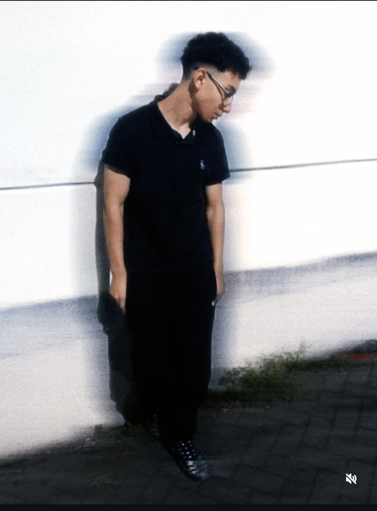

[ 001 / PORTFÓLIO DIGITAL ] SYSTEM READY
DESENVOLVIMENTO DE SISTEMAS / DESIGN DE INTERFACES
MATHEUSPINHEIRO_
Tecnologia, design e criatividade em uma nova perspectiva. Construindo interfaces, explorando ideias e evoluindo a cada projeto.
HTML / CSS / FIGMA2026 — EM DESENVOLVIMENTO

PROFILE // MP-001IDENTIDADE DIGITAL 01 / 06
01 / HTML + CSS
SISTEMA SOLAR
↗
02 / HTML + CSS
AYRTON SENNA
↗[ CONNECT / NETWORK ]